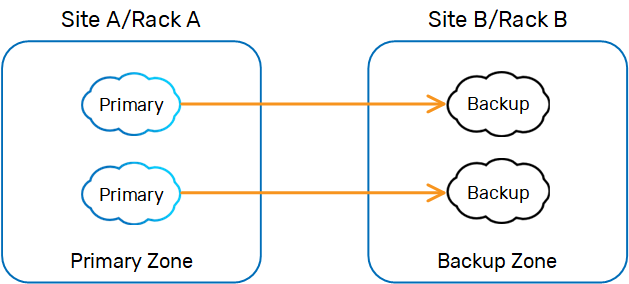

When a deploying a data grid, primary and backup instances are provisioned arbitrarily across the available machines running GSA/GSCs. You can't control where the instances are physically located because the primary election mechanism determines the location of the primary and backup instances at deploy time (the first instance per partition is elected as the primary).
In some cases, you may want to explicitly define the location of the primary and backup instances. A simple approach is using zones, setting one zone to host the primary instances and another zone to host the backup instances. These zones do not determine specific physical machines to host the primary/backup instances, but rather a logical group of GSCs associated with a specific zone, once started. Usually, the zone reflects machines located in specific different racks, or different data centers that are nearby and have very fast and reliable connectivity between them.
The Primary-Backup Zone Controller approach is intended for use with mostly read scenarios (80% read), where the latency between the sites is extremely low (below 1-2 milliseconds) with high bandwidth capacity.
Having primary and backup instances in different remote sites that geographically distant from each other is not recommended with read/write applications. In this case, primary and backup instances should be located within the same LAN with high speed connectivity and high capacity bandwidth, to allow the primary instance to replicate data as fast as it can to the backup instance, in order to minimize the effect of replication overhead on application behavior.
When corporate policy requires leveraging remote sites for disaster recovery or remote client access, most systems will have their data grid's primary and backup instances (using synchronous replication mode) within the same LAN (master data grid).There will be another grid and its data grid (not sharing the same lookup service or GSM with the master data grid) running as a slave data grid, where the WAN Replication Gateway is used to replicate data between the master and slave data grid asynchronously. With multi-master architecture, the WAN Replication Gateway may run a conflict resolver to handle concurrent updates of the same object at both sites.
The Primary-Backup Zone Controller used with Deterministic Deployment should be deployed with the data grid Processing Unit. The controller allows you to specify a specific zone for primary instances and a different zone for backup instances. When the Primary-Backup Zone Controller is deployed/started, it relocates all the primary instances to GSCs that are associated with the primary zone and later relocates all the backup instances to GSCs that are associated with the backup zone. The Primary-Backup Zone Controller periodically checks the status of the deployed data grid and relocates relevant instances as needed.

This example deploys a partitioned data grid with two partitions and a backup, where Zone A hosts the primary instances.
First, add the following snippet to your Processing Unit.
<bean id="primaryZoneController" class="org.openspaces.pu.sla.PrimaryZoneController" >
<property name="primaryZone" value="A" />
</bean>
After modifying the pu.xml, update the sla.xml as follows.
<os-sla:sla cluster-schema="partitioned"
number-of-instances="2" number-of-backups="1" max-instances-per-zone="A/1,B/1"The number of backups per partition is zero or one.
primary-zone="A">
<os-sla:requirements >
<os-sla:zone name="A"/>
<os-sla:zone name="B"/>
</os-sla:requirements>
</os-sla:sla>
Two zones (zone1, zone2) need to be defined:
Start Zone A
set export Start Zone B
set export Deploy your Processing Unit using the CLI, Web Management Console, or GigaSpaces Management Center. See the Deploying a Processing Unit topic.
When deployed, all primary instances will be allocated in zone A and backups in zone B. If the primary instance fails, the order is restored using restart.
Several primary zones can be specified:
primary-zone="A,C,D"
Primary instances will be provisioned in the configured order - A,C,D.
Deterministic deployment has the following limitations:
max-instances-per-zone parameter to 1.In the above example: max-instances-per-zone="A/1,B/1".
The property com.gs.grid.gsm.provision.maxBackupDelay=10s by default controls the delay until we instantiate a backup Space. This gives enough time for the first instance to be elected as a primary. You can increase this delay, for example to "20s" (20 seconds), if your instance availability takes longer. Set this property in the